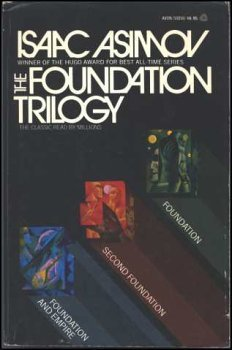

Catalin Rusu
Day dreamer
Projects to come
Inspirations
Foucault's PendulumOne of the first books to jolt me into thinking about alternative theories for things we had been taking for granted within our cultural paradigm. |
|
 |
DuneThe first book to open my imagination to wonderous future worlds, societies and adventures where seeking or defining one's destiny remains central to one's ontological quest. |
|  |
The Foundation TrilogyIt showed me how the ramifications of present time technological quests bring forth many ethical and existential questions that have the potential to ripple through eons and shape the future into a miriad of possibilities. |